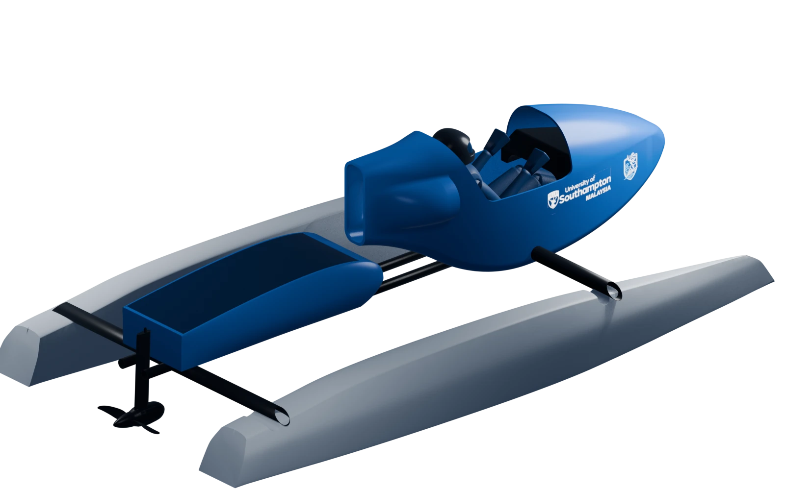

University of Southampton Malaysia
Marine Engineering Society
Our founding project, UoSM ARUS I, is a battery-electric competition boat for the Monaco Energy Boat Challenge World Series.
Sponsorship enquiries
Contact us at
Founding project
UoSM ARUS I
Battery-electric Energy Class boat for the Darwin Asia-Pacific Qualifier in September 2027. Monaco follows if the team qualifies.

Independent sources
- Monaco Energy Boat Challenge
- Official event site.
- Northern Territory Government
- Media release, 15 July 2026 — "Darwin lands prestigious Monaco Energy Boat Challenge".
Engineering
Boat systems
In the Energy Class the catamaran hull is identical for every team and supplied by the Yacht Club de Monaco. Teams design the cockpit, propulsion and energy strategy.
Structure and cockpit
Cockpit layout, mounting and pilot protection.
Propulsion and energy
Motor, drive, battery, BMS, isolation and charging.
Controls and safety
Pilot interface, telemetry, emergency stop and kill cord.
Engineering scope
The systems the team designs, builds and tests. Costed schedule in the proposal.
| Department | Systems |
|---|---|
| Mechanical | Propulsion · Chassis and cockpit · Steering · Safety equipment |
| Electrical | Battery and charging · Propulsion · HV distribution and safety · LV power and enclosures · Cabling and integration · Telemetry and pilot interface · Control and sensing · Cooling · Communications and pilot safety |
Hull, logistics, competition entry and branding sit outside the engineering scope. The proposal carries the full costed schedule against every line above.
Roadmap
Delivery schedule
-
18 Jun 2026
Project restart
-
Jun–Sep 2026
Research, rules review and concept selection
-
30 Nov 2026
Detailed design
-
15 Jan 2027
Design freeze
-
15 Feb 2027
Prototype complete
-
31 Mar 2027
First water tests
-
30 Apr 2027
Subsystem validation
-
31 Jul 2027
Full integration
-
31 Aug 2027
Darwin readiness gate
-
Sep 2027
Darwin qualifier
-
Oct–Dec 2027
Post-qualifier optimisation
-
Early 2028
Monaco final, if qualified
-
30 Apr 2028
Final handover
Team
Team and advisors
Academic advisors
Updates
Latest
Sponsorship
Support the campaign
Sponsorship funds ARUS I and is administered by us. Support can be cash or in kind, valued at an agreed fair-market rate.
Sponsorship proposal
Sent on request
The full costed schedule, partnership benefits and campaign plan, by email. Tell us which level interests you and we will send the detail that matches it.
| Partnership level | Partners sought | Recognition and role |
|---|---|---|
| Flagship | 2–3 | Project-wide recognition or named-scope support |
| Strategic | 4–6 | Major subsystem or competition support |
| Innovation | 6–10 | Defined engineering or campaign scope |
| Supporting | Open | Matched component, service or event support |
Contribution levels are set out in the proposal. Partners receive monthly progress and budget reports, testing reports and a final project report.
Partners
Discuss a partnership
Contact us at .